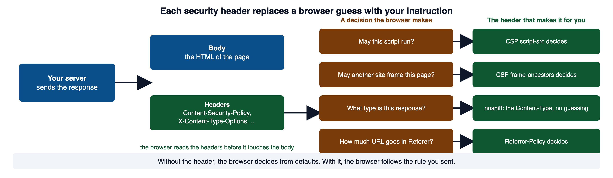
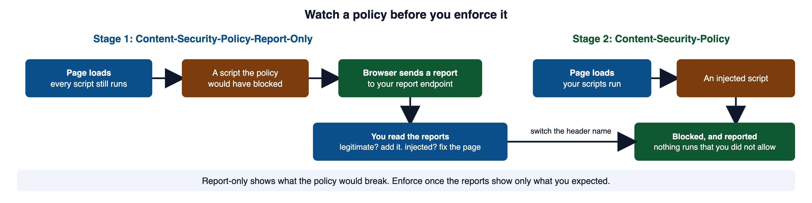
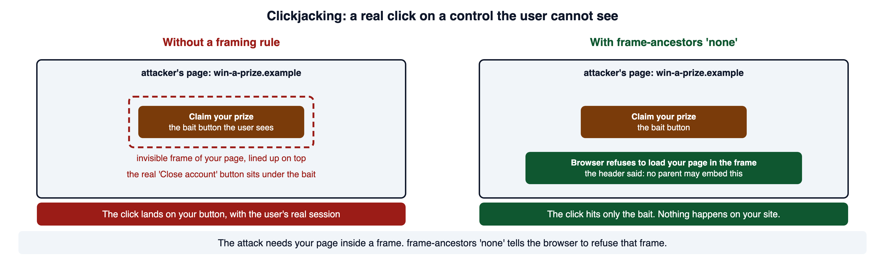
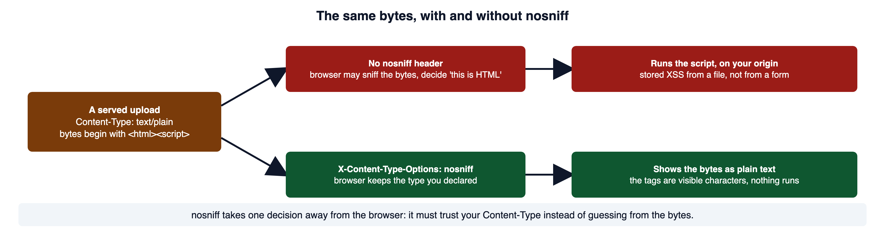
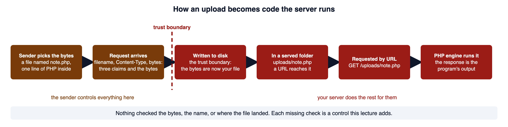
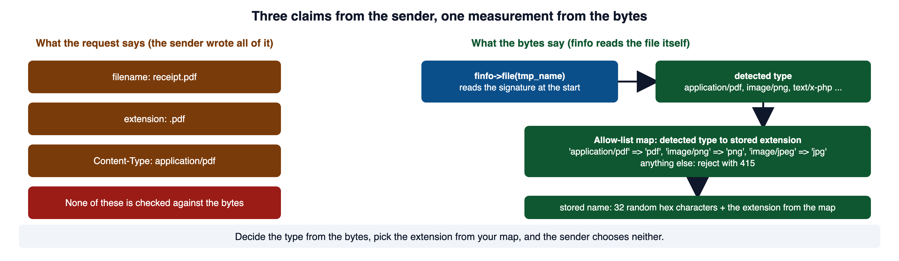
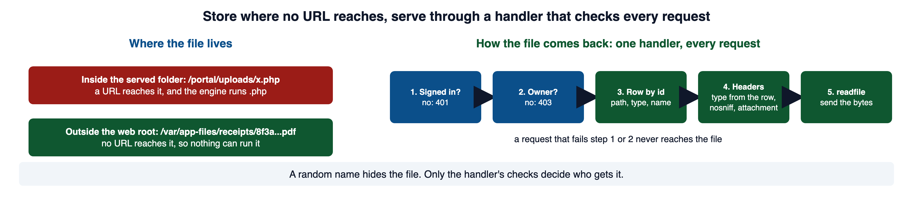

A staff member uploads a document and opens a portal page. Response headers influence what the browser may do; file-handling rules influence what the server stores and serves. This module examines both boundaries and the evidence needed to verify them.
Read this page with your course environment open, so you can send each response header from a small PHP file and read it back with curl -i. Red code blocks show a shape to recognize and never ship. Green code blocks show the pattern to copy.
1Required reading
These four are required reading for the module. This page teaches everything the assignment and the quiz need; the readings give the same material in the industry's own words, which is what a scanner finding, a CVE advisory, or a bug report will use.
- OWASP Top 10:2025 A02 Security Misconfiguration. The risk category for a server that does not send security headers, or sends them with weak values.
- OWASP File Upload Cheat Sheet. The operative reference for the upload half of the module: the allow-list, the content check, the generated name, where to store, and who may download.
- OWASP HTTP Headers Cheat Sheet. Header by header, a recommended value and the reason for it.
- CLARK: Deployment-time Defenses, Michael Hicks, University of Maryland. Slides on the controls that live in the deployment rather than in the source. A free CLARK account is needed to open it.
2Configuration is part of the application
Module 01 gave you the stance: do not trust what the client sends, and limit what the client can do. Both halves of this module apply it at deployment time. A response header limits what the client's browser will do with your page. Secure upload handling refuses to believe what a file says about itself.
PHP source can be written with care and the running application can still be unsafe. A header was never sent. A debug setting was left on. The folder that holds uploads can run code. None of those is a line in a .php file, and all of them are part of the attack surface. OWASP A02 lists each one: "The server does not send security headers or directives, or they are not set to secure values," and "Error handling reveals stack traces or other overly informative error messages to users."
A scanner that finds the headers missing reports a protection mechanism failure (CWE-693): a control that should be present is absent, so attacks it would have blunted land at full strength. MITRE's own wording for the missing case is that "the application does not define any mechanism." That is a finding on its own, separate from whatever bug the header would have contained.
OWASP A02 in section 1 is the source for the list of misconfigurations above, and CWE-693, linked in section 13, is the formal entry a scanner cites for a missing header. OWASP Web Security Testing Guide: Test Upload of Malicious Files is the tester's view of the upload half: its first objective is to "Identify the file upload functionality," which is also where an incident report starts.
3How a response header changes what the browser does
A response has two parts. The body is the page. The headers come first, and the browser reads them before it touches the body. Each security header takes a decision the browser was going to make on its own and makes it for the browser.

Left to itself, the browser decides from defaults and from guesses. It runs every script it finds in the page. It lets any site put your page inside a frame. For some responses it looks at the bytes and decides what kind of content they are, whatever the Content-Type header said.
In PHP you send a header with header(). It must run before any output, because the headers travel ahead of the body, and once the body has started there is nowhere left to put a header.
<?php
// WHY: The explicitly selected response policy must be applied before headers are committed.
// Send every security header in one place, before any output.
header_remove('X-Powered-By');
header(
"Content-Security-Policy: " .
"default-src 'self'; " .
"script-src 'self'; " .
"object-src 'none'; " .
"base-uri 'self'; " .
"frame-ancestors 'none'"
);
header('X-Content-Type-Options: nosniff');
header('Referrer-Policy: strict-origin-when-cross-origin');
echo '<!doctype html><title>Expenses</title><h1>Expense reports</h1>';Secure. Why: The explicitly selected response policy must be applied before headers are committed.
Here is what curl -i returns for that file under php -S. Each header() call became one line.
HTTP/1.1 200 OK
Host: 127.0.0.1:8090
Date: Thu, 08 Oct 2026 16:37:27 GMT
Connection: close
Content-Security-Policy: default-src 'self'; script-src 'self'; object-src 'none'; base-uri 'self'; frame-ancestors 'none'
X-Content-Type-Options: nosniff
Referrer-Policy: strict-origin-when-cross-origin
Content-type: text/html; charset=UTF-8
<!doctype html><title>Expenses</title><h1>Expense reports</h1>The header_remove('X-Powered-By') line takes out a header PHP adds on its own. By default PHP announces its version in every response, because the expose_php setting is on, and the manual says that setting can only be changed in php.ini. The OWASP HTTP Headers Cheat Sheet says to "Remove all X-Powered-By headers," because a version number tells an attacker which known bugs to try.
Here is the mistake. This file has one space before <?php.
<?php
// WHY: An omitted or misplaced response policy leaves the downstream browser behavior unrestricted.
header('X-Frame-Options: DENY');
echo '<h1>Expense reports</h1>';Vulnerable. Why: An omitted or misplaced response policy leaves the downstream browser behavior unrestricted.
HTTP/1.1 200 OK
X-Powered-By: PHP/8.5.8
Content-type: text/html; charset=UTF-8
<br />
<b>Warning</b>: Cannot modify header information - headers already sent by (output started at /app/late.php:1) in <b>/app/late.php</b> on line <b>2</b><br />
<h1>Expense reports</h1>PHP Manual: header states the before-output rule and the replace parameter. W3Schools: PHP header() Function says the same rule in one line. PHP Manual: header_remove documents the removal, and PHP Manual: core php.ini directives documents expose_php. MDN: MIME types is the source for the definition and the sniffing paragraph.
4Content Security Policy
Module 05 section 8 introduced the policy and the nonce: a random value in the header and on each script tag you wrote, so an injected tag cannot carry it. That stays the strongest shape for script-src. This section teaches the rest of the header: the directives, what each one controls, how they fall back, and how to turn a policy on without breaking a live site.
A policy is a list of directives separated by semicolons. Each directive is a name and the sources it allows.
| Directive | What it controls | Falls back to default-src? |
|---|---|---|
default-src | every fetch directive you did not name: images, styles, fonts, connections, frames, media, workers | it is the fallback |
script-src | which scripts may run, including inline blocks and event handlers | yes |
object-src | <object> and <embed>, the plugin content | yes |
base-uri | which URLs a <base> tag may set, so relative links cannot be redirected | no |
frame-ancestors | which parents may put this page in a frame | no |
The last column matters. MDN says frame-ancestors "does not fall back to the default-src setting. A policy that declares default-src 'none' still allows the resource to be embedded by anyone." Name it, or the page can be framed.
Two source values do most of the work. 'self' means the page's own origin: the scheme, host, and port from Module 05 section 3. 'none' means nothing at all. The single quotes are part of the value.
<?php
// WHY: The explicitly selected response policy must be applied before headers are committed.
header(
"Content-Security-Policy: " .
"default-src 'self'; " . // fallback for anything not named below
"script-src 'self'; " . // no inline script, no script from other hosts
"object-src 'none'; " . // no plugin content
"base-uri 'self'; " . // no <base> tag pointing elsewhere
"frame-ancestors 'none'" // nobody may frame this page
);Secure. Why: The explicitly selected response policy must be applied before headers are committed.
script-src 'self' refuses inline <script> blocks and scripts from other hosts. When you cannot move a script into a file, allow it by its hash instead of opening 'unsafe-inline'. MDN describes the mechanism: the browser "hashes the contents of any <script> and <style> elements, compares the result with any hashes in the CSP directive, and loads the resource only if there is a match." The value looks like 'sha256-...' with the base64 hash of the script's exact text.
The fix for the second failure is to watch the policy before you enforce it. A policy sent under a different header name is applied and reported, and blocks nothing.

<?php
// WHY: The explicitly selected response policy must be applied before headers are committed.
header('Reporting-Endpoints: csp="https://portal.example.com/csp-report"');
header(
"Content-Security-Policy-Report-Only: " .
"default-src 'self'; script-src 'self'; object-src 'none'; " .
"base-uri 'self'; frame-ancestors 'none'; " .
"report-to csp; report-uri https://portal.example.com/csp-report"
);Secure. Why: The explicitly selected response policy must be applied before headers are committed.
report-to is the current way to name the endpoint, and it needs the Reporting-Endpoints header to define it. report-uri is the older directive. MDN marks it deprecated and still shows both together, because report-to "does not yet have full cross-browser support." Both headers can be sent at once: a strict report-only policy beside a looser enforced one, while you tighten the enforced one.
MDN: Content-Security-Policy is the directive reference, including the hash sources. MDN: CSP default-src lists the directives it stands in for. MDN: Content-Security-Policy-Report-Only documents report-only mode and the two reporting directives. OWASP Content Security Policy Cheat Sheet says CSP "should not be relied upon as the only defensive mechanism against XSS" and gives the strict nonce and hash policies.
5Framing and clickjacking
A site on another origin cannot read your page. It can still load your page inside a frame on a page it controls, make the frame invisible, and line up one of your real buttons under a button of its own.
<style>
iframe { opacity: 0; position: absolute; top: 40px; left: 60px; }
.bait { position: absolute; top: 40px; left: 60px; }
</style>
<button class="bait">Claim your prize</button>
<iframe src="https://portal.example.com/account/close"></iframe>The user sees "Claim your prize" and clicks it. The invisible frame is on top, so the click lands on the control inside it. The browser sends that click with the user's real session cookie, because Module 06 section 2 showed that the cookie goes by destination.
The attack needs one thing: your page inside someone else's frame. The defense is to tell the browser that no parent may embed the page.

The control is the frame-ancestors directive from section 4, and the example policy there already ends with frame-ancestors 'none'. For browsers too old to read it, send the older header as well.
<?php
// WHY: The explicitly selected response policy must be applied before headers are committed.
header('X-Frame-Options: DENY');Secure. Why: The explicitly selected response policy must be applied before headers are committed.
MDN defines DENY as "The document cannot be loaded in any frame, regardless of origin." SAMEORIGIN allows your own pages to frame it and no one else. The OWASP Clickjacking Defense Cheat Sheet says X-Frame-Options "has been obsoleted by the frame-ancestors directive" and that where both are present the CSP rule wins in current browsers. Both must be real HTTP headers. MDN says putting X-Frame-Options in a <meta> tag "has no effect," and its frame-ancestors page says the directive is not supported in a <meta> element either.
Older sites tried JavaScript that detects a frame and breaks out of it. The cheat sheet files those under "Insecure Non-Working Scripts DO NOT USE," because "multiple ways of defeating this type of script have been made public," and a frame with scripting disabled never runs them.
MDN: CSP frame-ancestors documents the directive and the no-fallback rule. MDN: X-Frame-Options documents DENY, SAMEORIGIN, and the meta-tag warning. OWASP Clickjacking Defense Cheat Sheet is the source for the precedence rule, the frame-busting warning, and the SameSite note. CWE-1021 is linked in section 13.
6Three headers that each close one gap
Each of these takes one more decision away from the browser. Send them the same way, before any output.
Stop MIME sniffing
<?php
// WHY: The explicitly selected response policy must be applied before headers are committed.
header('X-Content-Type-Options: nosniff');Secure. Why: The explicitly selected response policy must be applied before headers are committed.
The header tells the browser that the Content-Type you sent is deliberate. MDN: the browser then "uses the supplied Content-Type as-is instead of examining the content to infer the type." For a script or stylesheet request, the browser goes further and refuses the response if the type is wrong: a <script src> whose response is not a JavaScript type is blocked. MDN names the case the header exists for: it "prevents XSS-attacks where user-uploaded content is executed as an HTML document, even if the browser has specified that it should be treated as plain text."

The endpoint that serves user uploads is where this header matters most, because there the bytes were chosen by someone else. Section 9 sends it on every download.
Limit what the Referer carries
<?php
// WHY: The explicitly selected response policy must be applied before headers are committed.
header('Referrer-Policy: strict-origin-when-cross-origin');Secure. Why: The explicitly selected response policy must be applied before headers are committed.
When the browser follows a link or loads a resource, it sends the URL of the page it came from in the Referer request header. If that URL holds a token or an identifier, the other site now has it. Module 11 section 12 named the places a URL leaks, and this header is one of them. strict-origin-when-cross-origin sends the full URL to your own origin, only the origin (https://portal.example.com/) to another HTTPS site, and nothing at all to a plain HTTP site. MDN says that value has been the browser default since a 2020 revision of the specification. Send it anyway. The OWASP HTTP Headers Cheat Sheet says to "Set the header explicitly rather than relying on browser defaults." no-referrer sends nothing to anyone, which is right for a page whose URL is itself a secret.
Commit the browser to HTTPS
<?php
// WHY: The explicitly selected response policy must be applied before headers are committed.
// Send only over HTTPS. Start with a short max-age; raise it once nothing breaks.
header('Strict-Transport-Security: max-age=86400');Secure. Why: The explicitly selected response policy must be applied before headers are committed.
Strict Transport Security tells the browser to use HTTPS for this host for max-age seconds, so a return visit cannot be downgraded to plain HTTP. MDN: the browser "will not allow the user to bypass secure connection errors" during that time either. It is a commitment you cannot recall from a browser that already stored it, so the value starts small. Module 11 section 10 states the rule for includeSubDomains: add it only when every host under the name serves HTTPS, and the example above leaves it out for that reason. The browser ignores the header when it arrives over plain HTTP. Your portal under php -S answers plain HTTP, so sending the header there does nothing. Module 11 section 9 covers what TLS means in this environment and what evidence you can collect.
One header that used to be on every list is gone. The OWASP HTTP Headers Cheat Sheet says of X-XSS-Protection: "Do not set this header or explicitly turn it off," because the browser filter it controlled created holes of its own.
MDN: X-Content-Type-Options documents what nosniff blocks. MDN: Referrer-Policy documents each value and the default. MDN: Strict-Transport-Security documents max-age, includeSubDomains, and the rule that the header is ignored over HTTP. The OWASP HTTP Headers Cheat Sheet in section 1 gives the recommended value for each.
7Why an uploaded file is the most dangerous input
An upload turns bytes the sender chose into a file on your server. Trace it with the words from Module 01 section 5.
- The source is the uploaded file: every byte chosen by the sender.
- The trust boundary is the moment the file is written to your disk.
- The sink, in the worst case, is a folder the web server serves and will run code from.
- The interpreter is the PHP engine, which runs the file when a URL asks for it.

Here is an expense-receipt upload that trusts the sender. Recognize the shape.
<?php
// WHY: Filename and MIME metadata supplied by the browser do not establish the actual file type or a safe storage path.
$name = $_FILES['receipt']['name'];
$type = $_FILES['receipt']['type'];
if ($type === 'application/pdf' || $type === 'image/png') {
move_uploaded_file(
$_FILES['receipt']['tmp_name'],
__DIR__ . '/uploads/' . $name
);
echo "Saved uploads/$name";
}Vulnerable. Why: Filename and MIME metadata supplied by the browser do not establish the actual file type or a safe storage path.
It checks two things, and both are the sender's word. $_FILES['receipt']['type'] is the type the client declared. The PHP manual says this value "is however not checked on the PHP side and therefore do not take its value for granted." The stored path is built from $name, the filename the client sent, so the sender also picks where the file lands and what it is called. Here is the part of the request that curl sent for a file called note.php that holds one line of PHP.
Content-Disposition: form-data; name="receipt"; filename="note.php"
Content-Type: application/pdf
<?php echo "hello from the uploaded file";HTTP/1.1 200 OK
Content-type: text/html; charset=UTF-8
Saved uploads/note.phpThe declared type says PDF, the name ends in .php, and the bytes are PHP. The check passed on the lie. Now a request for the file by its URL.
HTTP/1.1 200 OK
Content-type: text/html; charset=UTF-8
hello from the uploaded fileThe server did not hand back the file. It ran the file and returned the program's output. That is what happened under php -S, the server your portal runs on: the router returns false for a path that exists, and a .php file in a served folder is run, not sent.
The engine is not the only system a file reaches. The sender's bytes meet every parser that touches them.
| Threat | Where it lands |
|---|---|
| Server-side code | the engine runs an uploaded .php in a served folder |
| Stored cross-site scripting | an uploaded SVG or HTML file served from your origin |
| Parser bugs | the image or document library that opens the bytes |
| Path traversal (CWE-22) | a filename with ../ in it, used to build the storage path |
| Overwrite | a filename that matches a file already there |
| Unauthorized download | a file reachable by URL with no check on who is asking |
| Storage exhaustion | no size cap, no cleanup |
CWE-434, linked in section 13, is the formal entry and the source of the definition quoted above. PHP Manual: POST method uploads describes each $_FILES key, including the warning on type. PHP Manual: Built-in web server documents the router script and the rule that a false return serves the requested resource.
8Validate the file's real content
Start by deciding, in writing, the narrowest set of files the feature needs. An expense receipt is a scan or a photo.
Purpose: expense receipt
Allowed types: PDF, PNG, JPEG
Maximum size: 5 MB
Storage: outside the web root, under a name the server picks
Retrieval: the employee who filed it, and finance staffThat list is the allow-list from Module 03 section 4, applied to a file. Then check PHP's own result before touching the bytes.
<?php
// WHY: The rejection branch must stop or exclude further processing so denied input cannot reach the protected operation.
if (
!isset($_FILES['receipt']) ||
!is_array($_FILES['receipt']) ||
!is_int($_FILES['receipt']['error']) ||
$_FILES['receipt']['error'] !== UPLOAD_ERR_OK
) {
http_response_code(400);
exit('Upload failed');
}Secure. Why: The rejection branch must stop or exclude further processing so denied input cannot reach the protected operation.
error is UPLOAD_ERR_OK (0) when the file arrived whole. The other codes name what went wrong: UPLOAD_ERR_INI_SIZE (1) when the file is over upload_max_filesize, UPLOAD_ERR_PARTIAL (3) for a transfer that stopped early, UPLOAD_ERR_NO_FILE (4) when the field was empty. The is_int check matters for the same reason as the is_string check in Module 03 section 8: a form that sends receipt[] makes error an array, and a strict comparison against an array is false in a way you did not plan for.
Cap the size next, before anything expensive looks at the bytes.
<?php
// WHY: The rejection branch must stop or exclude further processing so denied input cannot reach the protected operation.
if ($_FILES['receipt']['size'] > 5 * 1024 * 1024) {
http_response_code(413);
exit('File too large');
}Secure. Why: The rejection branch must stop or exclude further processing so denied input cannot reach the protected operation.
Two server settings sit under that check. upload_max_filesize defaults to 2M and post_max_size to 8M, and the manual says the second "must be larger than" the first. A MAX_FILE_SIZE hidden field in the form is not a control. The manual says the field can be fooled from the browser side and calls it a convenience for users, while the server-side settings "cannot be fooled."
Now read the bytes. finfo looks at the file's signature, the fixed bytes a format begins with, and reports the type the content really is. It is the one type signal that is not the sender's word.
<?php
// WHY: The rejection branch must stop or exclude further processing so denied input cannot reach the protected operation.
$finfo = new finfo(FILEINFO_MIME_TYPE);
$detected = $finfo->file($_FILES['receipt']['tmp_name']);
// The map does two jobs: it is the allow-list, and it names the
// extension the file will be stored under. The client chooses neither.
$allowed = [
'application/pdf' => 'pdf',
'image/png' => 'png',
'image/jpeg' => 'jpg',
];
if (!isset($allowed[$detected])) {
http_response_code(415);
exit('Unsupported file type');
}Secure. Why: The rejection branch must stop or exclude further processing so denied input cannot reach the protected operation.
Here is what finfo reported for four real files: a PDF, a PNG, the one-line PHP file from section 7, and that PNG with the PHP file's bytes appended to its end.
<?php
$f = new finfo(FILEINFO_MIME_TYPE);
foreach (['real.pdf', 'real.png', 'note.php', 'polyglot.png'] as $n) {
echo $n, ' => ', $f->file($n), "\n";
}real.pdf => application/pdf
real.png => image/png
note.php => text/x-php
polyglot.png => image/png
Here are the responses the secure handler gave to three uploads under php -S. The first is the note.php file from section 7, sent with the filename receipt.pdf and a declared type of application/pdf.
HTTP/1.1 415 Unsupported Media Type
Content-type: text/html; charset=UTF-8
Unsupported file typeHTTP/1.1 200 OK
Content-type: text/html; charset=UTF-8
Stored as ab7facb123f00811f6197d88002bb349.pdf (application/pdf)HTTP/1.1 200 OK
Content-type: text/html; charset=UTF-8
Stored as 3c4d8716e1b4d68dac7184e300c5a105.png (image/png)PHP Manual: finfo_file documents the call and its string|false return. PHP Manual: Error messages explained lists the UPLOAD_ERR_* codes. PHP Manual: core php.ini directives documents upload_max_filesize and post_max_size. W3Schools: PHP File Upload walks through $_FILES with a live example; note that its sample checks the extension of the sent name, which this section replaces with a check on the bytes.
9Name, store, and serve the file
Passing the content check does not make the sender's filename safe. Ignore it for storage and generate your own name, with the extension the map chose.
<?php
// WHY: Cryptographic random bytes avoid predictable values for security-sensitive identifiers.
$storedName = bin2hex(random_bytes(16)) . '.' . $allowed[$detected];
$destination = dirname(__DIR__) . '/app-files/receipts/' . $storedName;
if (!move_uploaded_file($_FILES['receipt']['tmp_name'], $destination)) {
http_response_code(500);
exit('Could not store the file');
}Secure. Why: Cryptographic random bytes avoid predictable values for security-sensitive identifiers.
random_bytes(16) returns sixteen bytes the manual calls "suitable for all applications, including the generation of long-term secrets," and bin2hex writes them as 32 hex characters. The result is a name like ab7facb123f00811f6197d88002bb349.pdf. Because nothing the sender typed survives into it, one line removes path traversal, overwrite by collision, a double extension such as receipt.php.pdf, and a capitalized .PhP at once. The section 8 handler was sent a real PDF with the filename ../../etc/passwd; it stored ed8b95e1f843191a071c1deffbf92872.pdf in the receipts folder and nowhere else.
move_uploaded_file adds a check of its own. The manual says it "checks to ensure that the file designated by from is a valid upload file (meaning that it was uploaded via PHP's HTTP POST upload mechanism)" and does nothing otherwise, so code that is handed some other path by mistake cannot be made to move it. The manual also warns that "If the destination file already exists, it will be overwritten," which is one more reason the name is random.
The destination is as important as the name. dirname(__DIR__) is the folder above the served one, so the receipts folder is outside the web root: no URL reaches it, and a server cannot run what no request can name. The OWASP File Upload Cheat Sheet's order of preference is to "Store the files on a different server. If that's not possible, store them outside of the webroot." Keep the original filename only to show the user. Store it in the database, print it through htmlspecialchars as Module 03 section 6 taught, and never build a path from it.

A file stored outside the web root comes back only through a handler you write, and that handler makes an authorization decision on every request. Module 08 sections 3 and 5 taught the decision; here it runs before a single byte is read.
<?php
// WHY: The selected path and access checks determine which bytes this response may serve.
require_once __DIR__ . '/../auth.php';
require_once __DIR__ . '/../lib/query.php';
auth_require_login();
$id = filter_input(INPUT_GET, 'id', FILTER_VALIDATE_INT);
$receipt = ($id === false || $id === null)
? null
: q_one('SELECT * FROM receipts WHERE id = ?', [$id]);
// Ownership first, then the file. Finance staff may read any receipt.
if ($receipt === null || ($receipt['owner'] !== auth_username() && auth_role() !== 'finance')) {
http_response_code(404);
exit('Not found');
}
header('Content-Type: ' . $receipt['mime']); // from your row, not from the bytes
header('X-Content-Type-Options: nosniff'); // the browser keeps that type
header('Content-Disposition: attachment; filename="receipt-' . (int) $receipt['id'] . '.' . $receipt['ext'] . '"');
header('Content-Length: ' . filesize($receipt['path']));
readfile($receipt['path']);Secure. Why: The selected path and access checks determine which bytes this response may serve.
Three headers do the serving safely. Content-Type comes from the row the upload wrote, which holds the detected type, so a stored polyglot is served as image/png and nothing else. nosniff stops the browser from second-guessing that. Content-Disposition: attachment tells the browser to save the file rather than display it as part of a page; MDN says attachment means the response "should be downloaded; most browsers presenting a 'Save as' dialog." The filename in that header is built from the id and the map's extension, not from the sender's name, because MDN's own list of filename rules says "Any path information should be stripped." readfile reads the file and writes it to the output.
PHP Manual: move_uploaded_file is the source for the valid-upload check and the overwrite warning. PHP Manual: random_bytes documents the generator. MDN: Content-Disposition documents attachment and the filename rules. PHP Manual: readfile documents the last line. CWE-22, linked in section 13, is the entry for the ../ filename.
10How you know the fix worked
A fix is a claim until a test that used to succeed now fails and a test that should succeed still does. Run this set before and after the change and keep the output. The rows are written for the receipt feature in sections 7 to 9; adapt the specifics to the upload you are hardening.
| Test input | Before the fix | After the fix |
|---|---|---|
| a real PDF and a real PNG | accepted | still accepted |
application/pdf declared, PHP source as the bytes | stored and runs when requested | 415 from content detection |
| a real PNG with PHP text appended | stored under the sender's name in a served folder | stored outside the web root under a generated .png name |
receipt.php.pdf and receipt.PhP | stored under the sender's name | stored under a generated name |
../../etc/passwd as the filename | used to build the path | never reaches the path |
| two uploads with the same filename | the second overwrites the first | both stored |
| an empty field and a 6 MB file | inconsistent | 400 and 413 |
| another user's receipt by its URL | served | 404 from the handler |
| the response headers on any page | policy and nosniff absent | policy and nosniff present |
For the headers, the evidence is the response itself. curl -i prints the status line and every header before the body, as the responses in sections 3 and 7 show. In the browser, the same headers are on the Network panel, which the Orientation page Requests and Developer Tools walks through. A missing header produces no error and no broken page, so the only evidence that it is missing is a response that does not contain it.
The OWASP testing guide describes the same attacks from the tester's chair. Its upload test includes the step "Change the value of Content-Type as image/jpeg in HTTP request," and the capitalization trick "file.PhP," which are the second and fourth rows above.
The OWASP Web Security Testing Guide page linked in section 2 is the tester's checklist behind the table. PHP Manual: Handling file uploads is the chapter that the $_FILES checks in rows two to seven exercise.
11Common misconceptions
✕"The extension is
.pdf, so it is a PDF."The extension is part of the filename, and the filename came from the sender. It says nothing about the bytes, and it is the input to double-extension and path tricks.
✕"The browser sent
Content-Type: image/png, so it is an image."So did the
curlrequest in section 7, which declared a PDF and sent PHP. The declared type is a claim by the sender. The manual says PHP does not check it.✕"We renamed the file, so we are safe."
Renaming defeats the tricks that ride on a filename. The type, the size, the storage location, and the download check are still separate controls.
✕"
finfosaidimage/png, so the file is harmless."The signature is a prefix. The polyglot in section 8 passed detection with PHP text inside. Storage outside the web root and the handler's
Content-Typeare what make it harmless.✕"CSP will stop the upload from running."
A policy instructs the browser. The server runs an uploaded
.phpbefore any browser is involved, and no header reaches that.✕"
default-src 'none'blocks framing."frame-ancestorsdoes not fall back todefault-src. A policy that never names it allows any site to frame the page.✕"A random, unguessable URL is access control."
Unguessable is not authorized. URLs end up in history,
Refererheaders, and logs. The handler checks every request.✕"The page has no visible errors, so the headers are fine."
A missing header shows nothing on the page. Its absence is a protection mechanism failure (CWE-693) that only the response reveals.
✕"HSTS makes HTTPS work."
It commits the browser to HTTPS. If HTTPS is broken, it commits the browser to an outage, for as long as
max-agesays.
12Check your understanding
Work these before you look at the answers.
- What does a Content Security Policy restrict, and why is it a second layer against cross-site scripting rather than the fix?
- Why deploy a new policy under
Content-Security-Policy-Report-Onlyfirst? What does the browser do differently? - Which directive controls who may frame your page, which older header does the same job, and what happens to
frame-ancestorsif you set onlydefault-src 'none'? - What decision does
X-Content-Type-Options: nosnifftake away from the browser, and on which endpoint does it matter most? - Name the three claims a client makes about an uploaded file, and say why none of them is evidence about the bytes.
- An upload handler compares
$_FILES['receipt']['type']withapplication/pdf. What does an attacker do to pass, and what replaces the check? - In the
$allowedmap, what do the keys do and what do the values do? - Why does the server generate the stored name instead of keeping the browser's?
- Why store uploads outside the web root, and what does that prevent that content detection cannot?
- A file is served from a URL with a random 32-character name. Why is that not access control, and what is?
header('X-Frame-Options: DENY')appears to do nothing. Name the usual cause and how the response reveals it.- Trace an unrestricted upload to code execution using source, trust boundary, sink, and interpreter.
Answers: (1) which origins and kinds of content the browser may load or run; it cannot tell an injected script from yours, so encoding at the sink from Module 03 is the fix and the policy limits what a missed sink costs. (2) report-only applies the policy and sends a report for each violation but blocks nothing, so you learn what enforcement would break before it breaks. (3) frame-ancestors; X-Frame-Options; nothing, because frame-ancestors does not fall back, so the page can be framed. (4) guessing the type from the bytes; the endpoint that serves user uploads. (5) the filename, the extension, and the declared Content-Type, all written by the sender and none derived from the bytes. (6) the attacker declares application/pdf while sending PHP bytes; content detection with finfo against the allow-list map. (7) the keys are the allow-list of detected types; the values are the extensions the server stores under. (8) the browser's name is attacker-controlled and carries path, double-extension, and case tricks; a generated name contains none of the sender's characters. (9) no URL reaches it, so the server cannot run it, which covers a polyglot that passed detection. (10) the URL leaks into history, Referer, and logs; a handler that authorizes every request before reading the file. (11) output was sent before the call, often a space or blank line before <?php; the response lacks the header, and with errors displayed it carries a "headers already sent" warning naming the line. (12) the source is the uploaded bytes, the trust boundary is writing them to disk, the sink is a served folder the engine runs code from, and the interpreter is the PHP engine that runs the file when a URL requests it.
13References and further study
The four required readings in section 1 and the pages linked through the lecture are the main references. Each entry below names what it confirms.
- CWE-434: Unrestricted Upload of File with Dangerous Typecwe.mitre.org
The entry behind sections 7 to 9; its mitigations include a limited set of extensions with generated filenames and storage outside the document root.
- CWE-1021: Improper Restriction of Rendered UI Layers or Framescwe.mitre.org
The clickjacking weakness in section 5; it names
frame-ancestorsandX-Frame-Optionsas the mitigations. - CWE-693: Protection Mechanism Failurecwe.mitre.org
What a scanner reports when the headers in sections 4 to 6 are absent; its text covers both a missing and an insufficient mechanism.
- CWE-22: Improper Limitation of a Pathname to a Restricted Directorycwe.mitre.org
The
../filename in sections 7 and 9; MITRE prefers the term "path traversal." - CWE-16: Configurationcwe.mitre.org
OWASP A02 maps it, and MITRE marks it a category that must not be used to describe a real finding; name the specific weakness, such as CWE-693, instead.
- PHP Manual: finfo::filephp.net
The method form used in section 8, an alias of
finfo_file.
Videos.